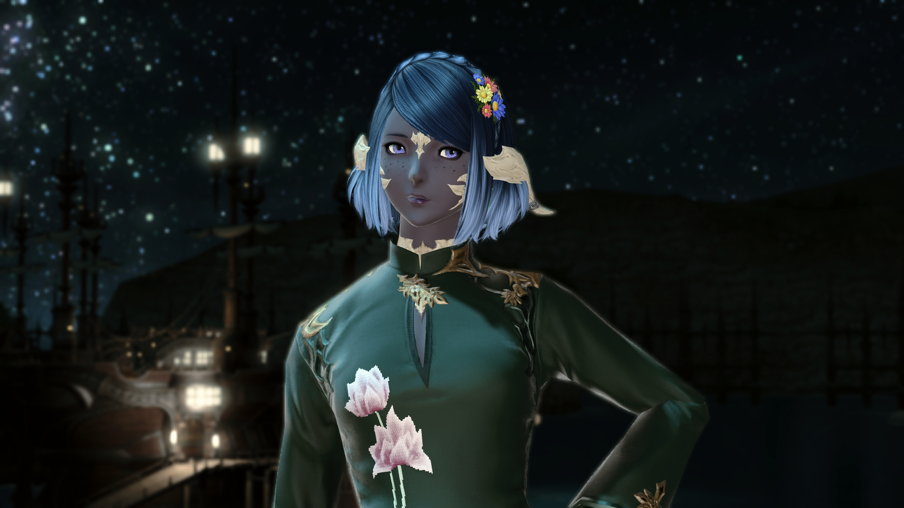
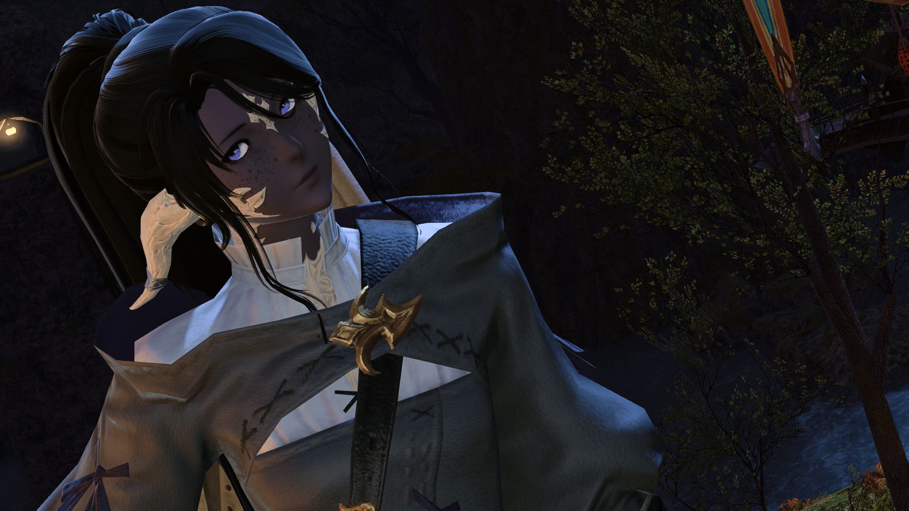
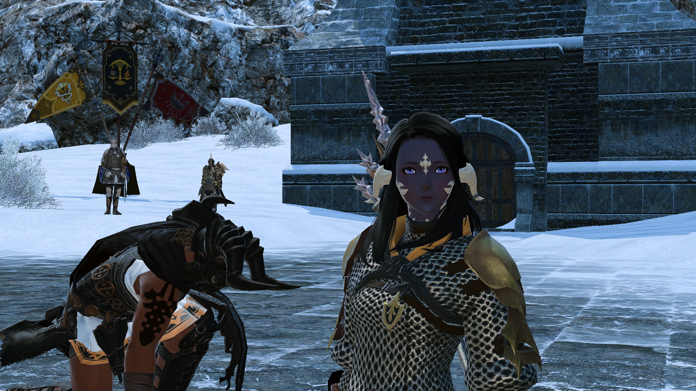
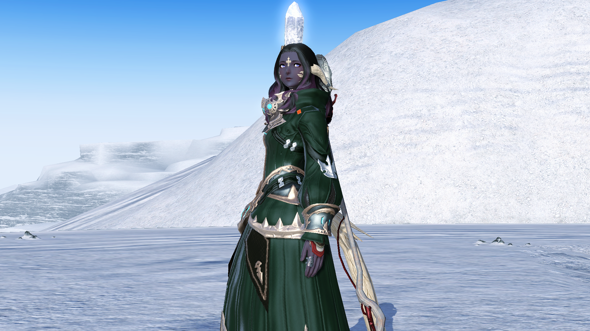
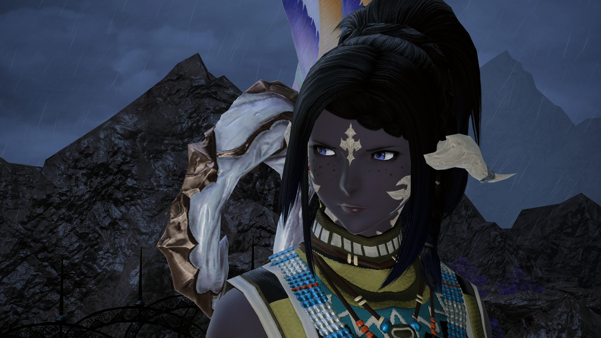
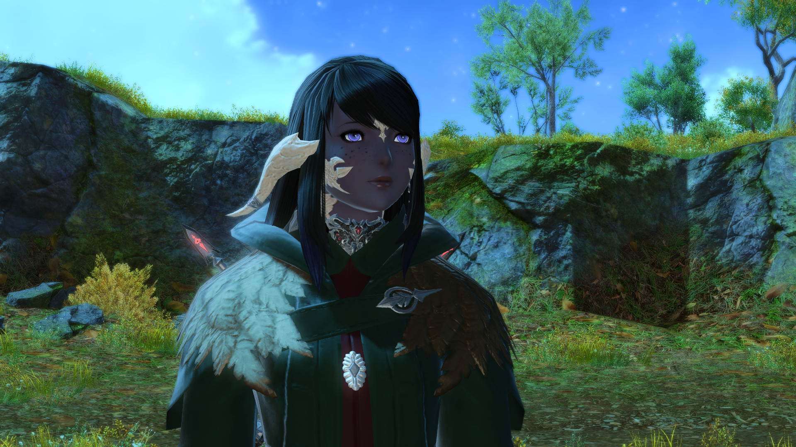
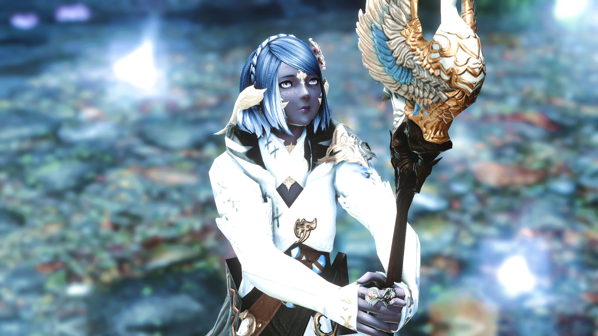
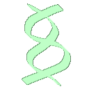

Haelwedcolfindan Deorceadaevum
Detailae
Name:
Haelwedcolfindan Deorceadaevum
Titles:
Haelen
Battle role:
healer, aetheric defense
Race:
Au Ra - Raen
Age:
Unknown (oldest)
Diety:
Halone
Height:
4'9"
Gender:
fae
Interest:
all (bisexual)
Once-home:
Token Ard
Home city:
Gridania
Main Job:
Sage
Other Jobs:
White Mage, Scholar, Astrologian
Career:
White Mage, Servant of The Elementals of The Twelveswood
Corpae
Tiny, smaller even than Anzille, the quiet and elegant Haelwedcolfindan is a presence not in strength, but spirit.
The softly spoken, deeply-voiced, carefully poised Au Ra dresses in dark greens, calming blues. She elects expensive silks, and conservative robes, preferring to leave her form to the imagination. Pairing her slate skin and ivory scales, she drifts towards short hair in tidy styles, darker hues, and highlights of luster.